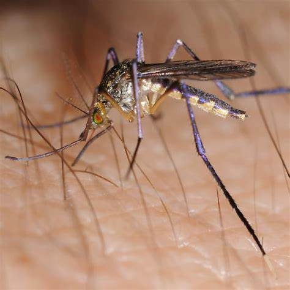

 El género Psorophora forma parte de la familia Culicidae y está compuesto por mosquitos de gran tamaño, conocidos por su comportamiento agresivo y su habilidad para habitar zonas temporales inundadas. Su distribución se extiende principalmente por América, con varias especies presentes en América del Norte, Central y del Sur. Evolutivamente, Psorophora ha desarrollado mecanismos de resistencia y adaptación a ambientes cambiantes, lo que les permite desarrollarse en hábitats que otros mosquitos no colonizan con facilidad.
Una de las características distintivas del género es su capacidad para depositar huevos en suelos secos que posteriormente se inundan. Esta estrategia les permite aprovechar charcas temporales y zonas de lluvia repentina. Los huevos pueden permanecer viables durante largos períodos de sequía, lo que representa una ventaja evolutiva notable. Además, algunas especies son capaces de completar su ciclo de vida rápidamente, lo que les da una gran ventaja competitiva frente a otros mosquitos.
Aunque no se consideran los principales vectores de enfermedades, algunas especies de Psorophora pueden transmitir arbovirus y parásitos bajo determinadas condiciones ecológicas. También son importantes desde el punto de vista ecológico debido a su rol en la cadena alimenticia y a su competencia con otros mosquitos vectores.
El ciclo de vida del mosquito Psorophora consta de las fases típicas: huevo, larva, pupa y adulto. Sin embargo, se distingue por la capacidad de sus huevos de resistir la desecación y desarrollarse solo cuando el entorno se inunda, lo cual les permite colonizar ambientes temporales y poco previsibles.
Las hembras depositan los huevos sobre suelos húmedos o en depresiones del terreno que se inundan con lluvias. Una vez que el área se llena de agua, los huevos eclosionan rápidamente y dan paso a larvas activas y voraces. Estas larvas suelen desarrollarse más rápidamente que las de otros géneros, reduciendo el tiempo necesario para alcanzar la etapa adulta.
Después de pasar por sus etapas larvales, las pupas se forman y, en condiciones favorables, los adultos emergen en cuestión de días. Los adultos Psorophora son especialmente agresivos, atacando a humanos y animales tanto durante el día como al atardecer. Esta agresividad los hace notorios incluso si su papel en la transmisión de enfermedades no es tan destacado como en otros géneros.
Algunas especies del género Psorophora han sido implicadas como vectores secundarios en la transmisión del virus de la encefalitis equina venezolana, una enfermedad que afecta a equinos y humanos, causando fiebre, dolor muscular y, en casos graves, complicaciones neurológicas.
Se han identificado ejemplares de Psorophora infectados con el virus del Nilo Occidental en estudios entomológicos, lo que indica un posible papel como vectores, aunque aún no se considera una vía principal de transmisión.
El mosquito Psorophora causa picaduras grandes, muy dolorosas e inflamadas. Genera una reacción más fuerte de lo habitual en la piel.